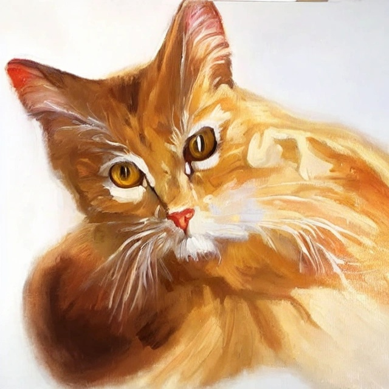
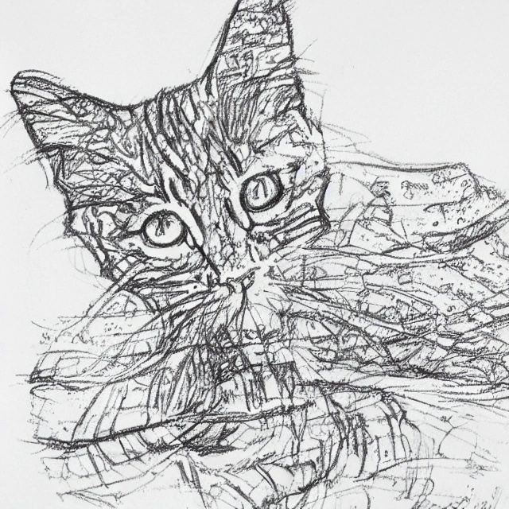
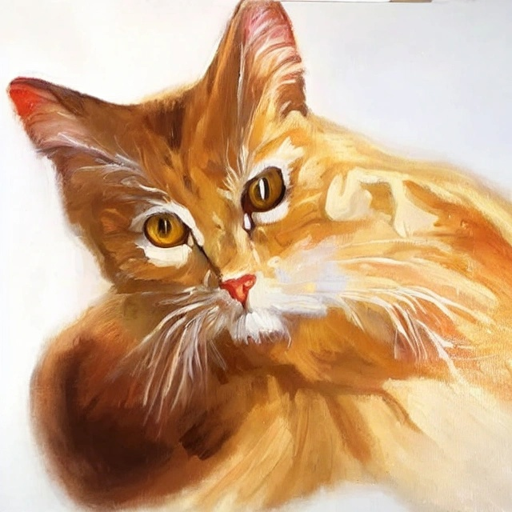
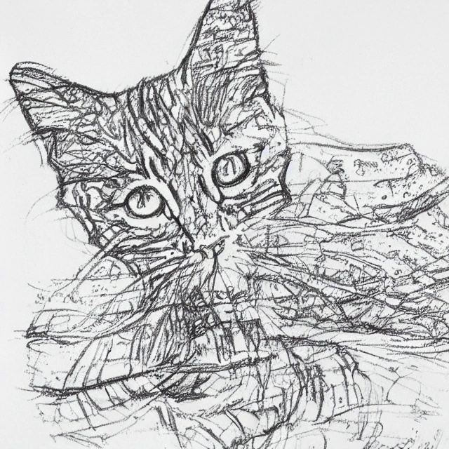
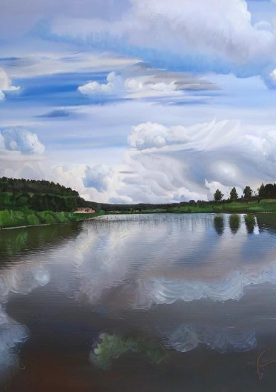
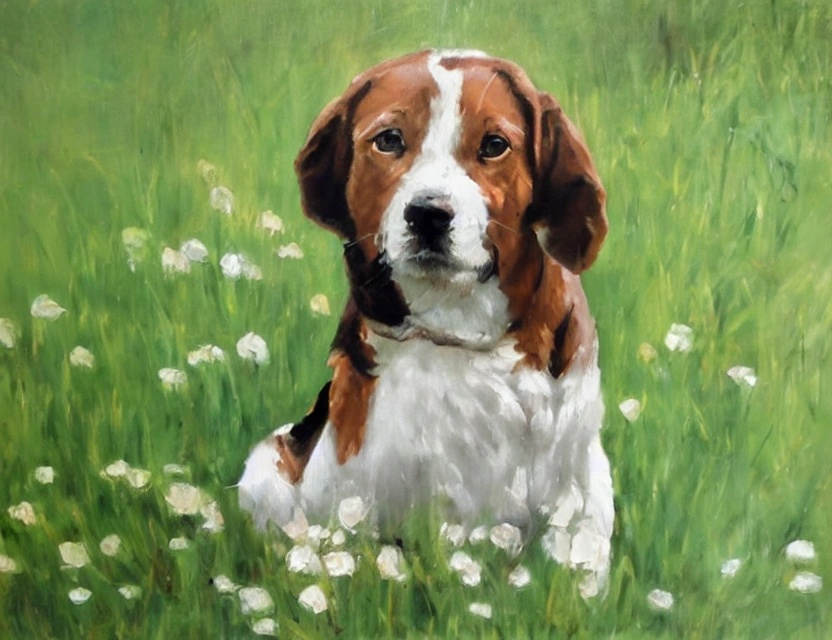
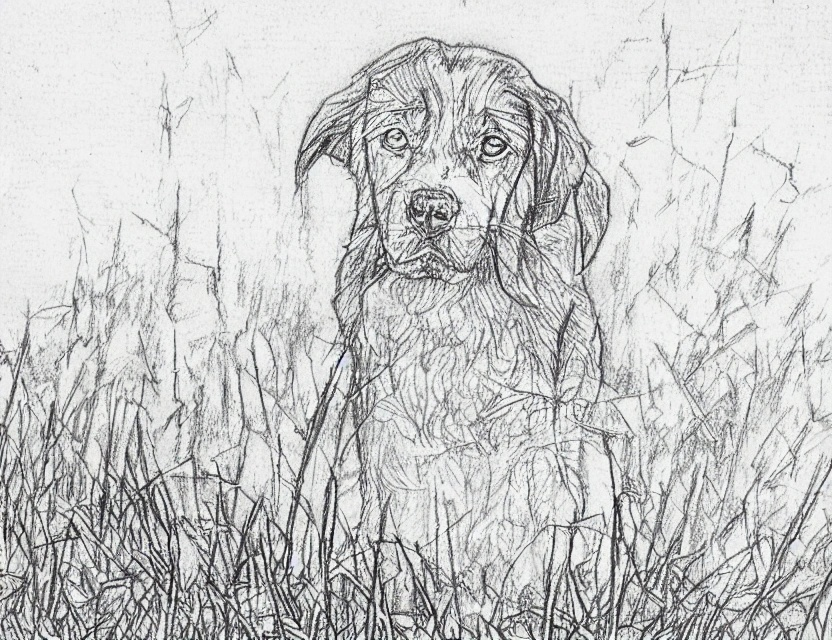
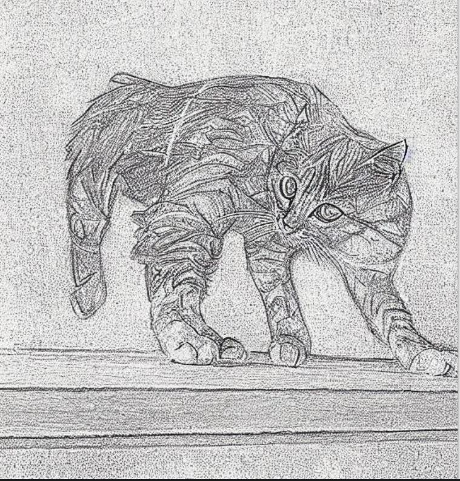

Генерация изображений для раскраски
Для создания изображения раскраски из вашего фото мы используем
нейронную сеть Stable Diffusion, которая генерирует картинки. Внимание! Нейронная сеть не может в
точности передать Ваше изображение, поэтому возможны небольшие искожения.
Приятного пользования !
Пример работы сервиса
Первоначальное изображение

Изображение красками

Изображение карандашом
Первоначальное изображение

Изображение красками

Изображение карандашом




Для того, чтобы воспользоваться сервисом необходимо прикрепить Ваше изображение и ввести почту. Вводить почту нужно в том случае, если Вам нужно получить
обработанное изображене в PDF формате.